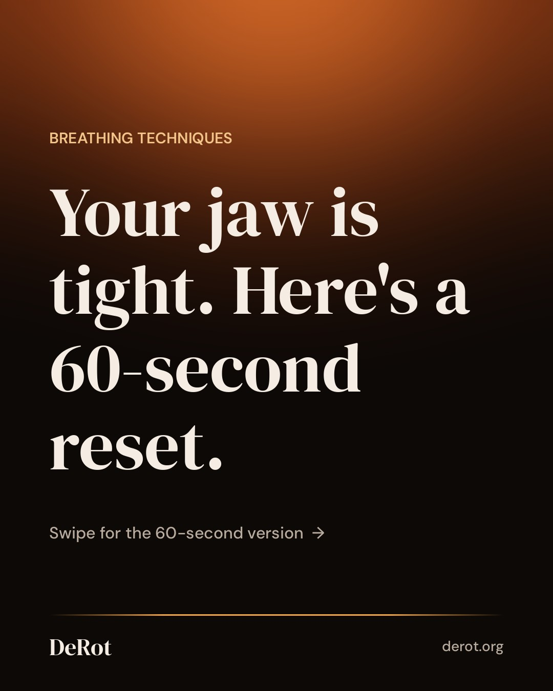
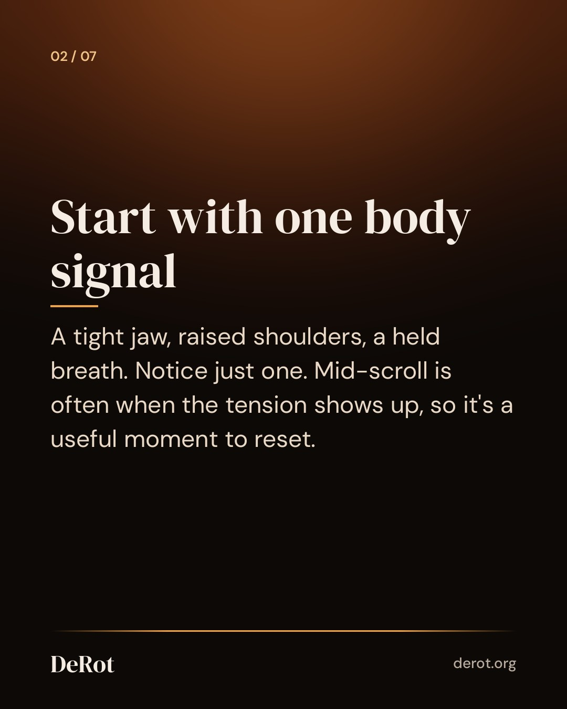
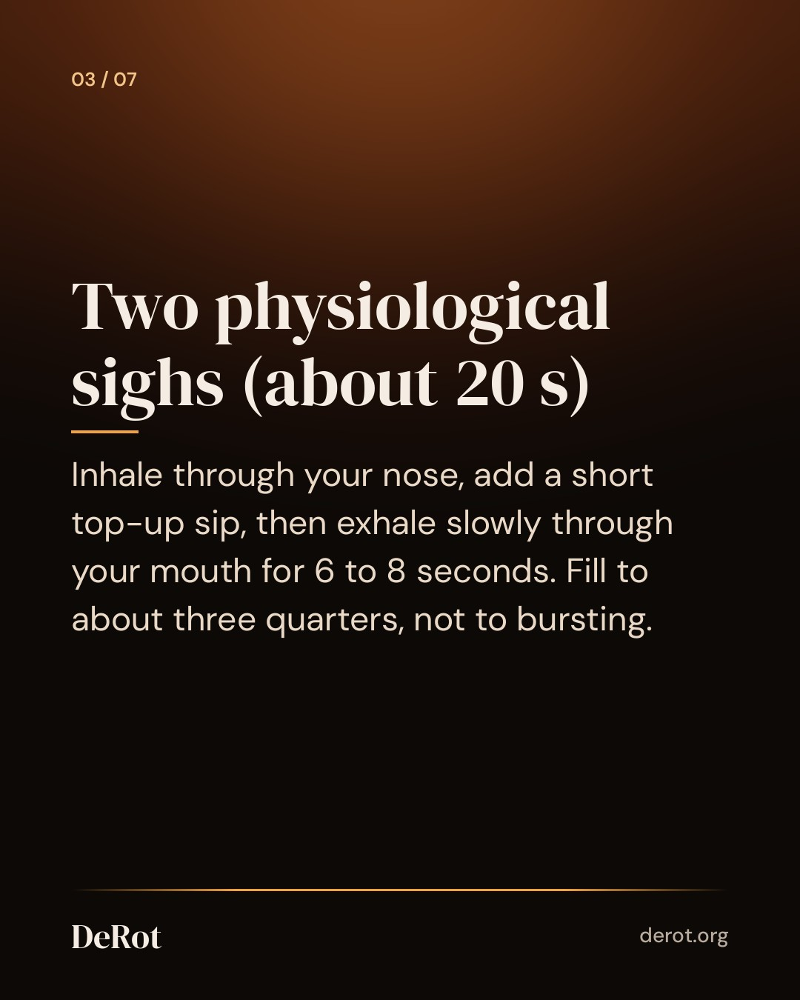
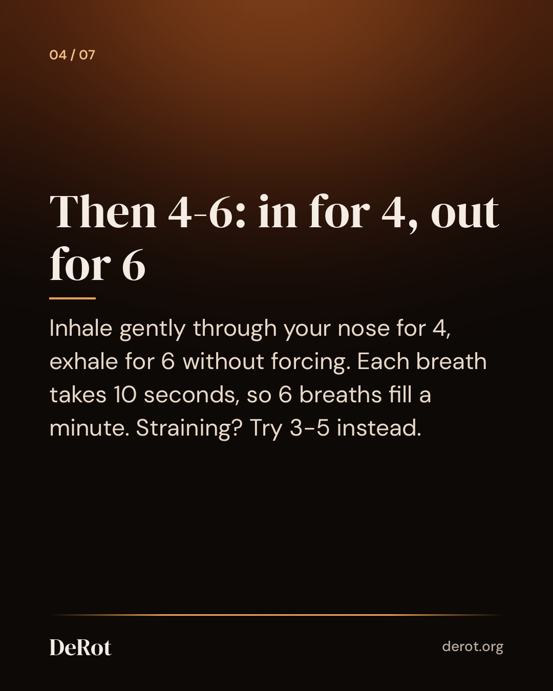
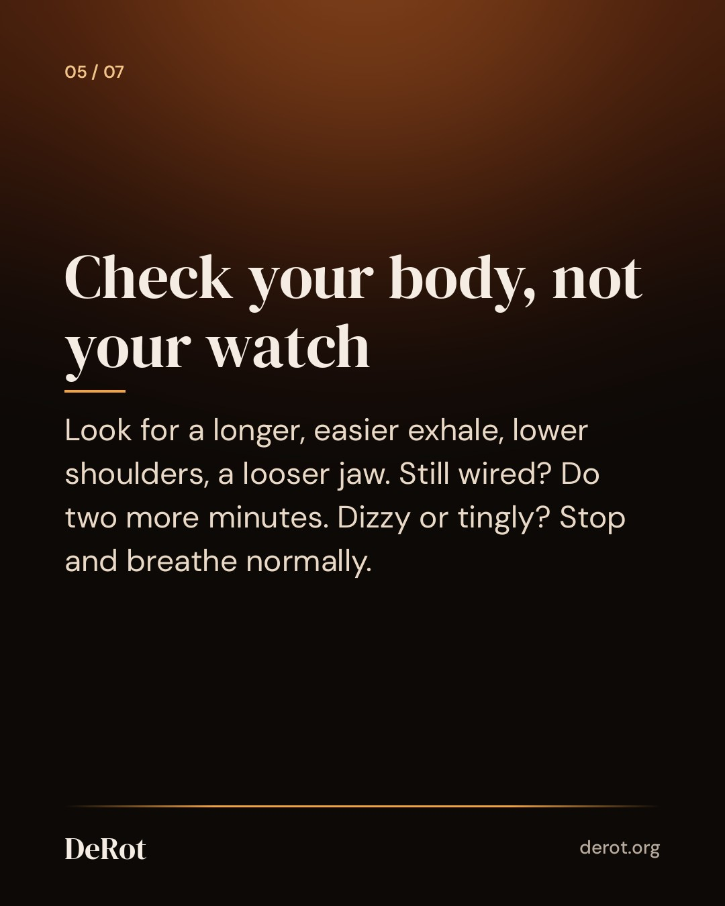
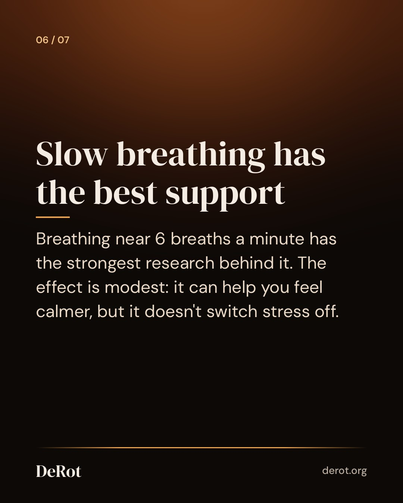
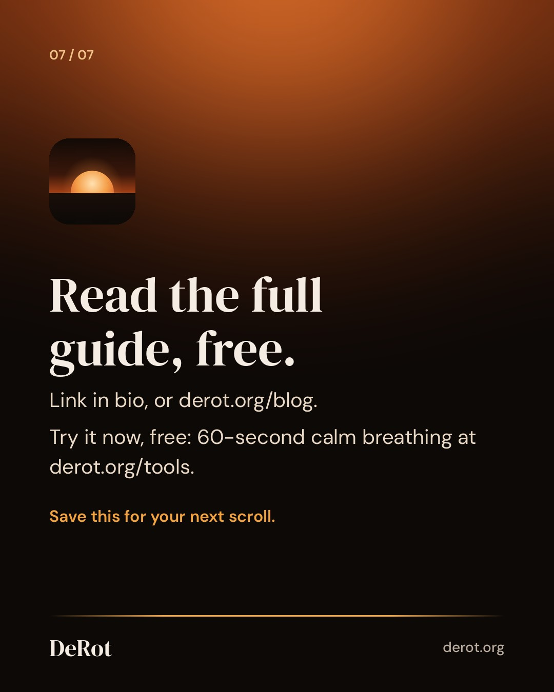

Breathing Techniques for Calm: 5 Patterns, Each in 60 Seconds
Slides (Threads cover image; Instagram posts the reel)







Instagram Reel (34s)
Instagram caption
Jaw tight, shoulders up, vaguely wired mid-scroll? This 30-second reset fits before you carry on. Take your eyes off the screen and do two physiological sighs: inhale through your nose, add a short top-up sip, then exhale slowly through your mouth for 6 to 8 seconds. Then take one slow 4-6 breath (in for 4, out for 6), or three if you have time. Keep it gentle, and stop if you feel dizzy. Full guide: link in bio. #breathwork #nervoussystemregulation #physiologicalsigh #calmbreathing #stressrelief
Threads
One useful thing from our breathing research roundup: you don't need the fanciest technique. Slow breathing around 6 breaths a minute has the strongest support. 4-6 gets you there: in for 4, out for 6, 10 seconds a breath. Wound up mid-scroll? Do two gentle physiological sighs first, then a few 4-6 breaths. https://derot.org/blog/breathing-techniques-for-calm/
Mid-scroll is often when you notice it: jaw set, shoulders up, breath shallow. That's a good moment for a 30-second reset. Take your eyes off the screen and do two physiological sighs: inhale through your nose, add a short top-up sip, then exhale slowly through your mouth for 6 to 8 seconds. Follow with one slow 4-6 breath (in for 4, out for 6), or three if you have time. Slow breathing near 6 breaths a minute has the strongest research support. The effect is modest. It can help you feel calmer, but it won't switch stress off. Stop if you feel dizzy. Our full guide has five calming patterns as 60-second scripts, each with a free timer.
Schedule (UTC)
| queued | 2026-11-13T21:41:00+00:00 | ||
| threads | queued | 2026-11-13T21:41:00+00:00 | |
| queued | 2026-11-13T23:30:00+00:00 |